Xây dựng một hệ sinh thái kỹ thuật số nhằm quảng bá khu ẩm thực Vĩnh Khánh, hỗ trợ khách du lịch tìm kiếm nhà hàng, trải nghiệm thuyết minh đa ngôn ngữ và hỗ trợ các chủ nhà hàng số hóa hoạt động kinh doanh.
Hệ thống được thiết kế nhằm số hóa hoạt động quảng bá và trải nghiệm ẩm thực tại khu phố Vĩnh Khánh, cung cấp nền tảng tìm kiếm, định vị và thuyết minh tự động cho khách du lịch, đồng thời hỗ trợ các nhà hàng quản lý thông tin và tiếp cận khách hàng thông qua môi trường trực tuyến.
Ứng dụng dành cho khách du lịch và chủ nhà hàng.
Quản trị dữ liệu, phê duyệt nhà hàng và thống kê hệ thống.
Lưu trữ thông tin người dùng, nhà hàng và nội dung đa ngôn ngữ.
| Table | Module | Mục đích |
|---|---|---|
| Pois | content | Lưu thông tin nhà hàng: tên, mô tả, tọa độ, bán kính geofence, hình ảnh. |
| PoiLocalizations | localization | Lưu bản dịch đa ngôn ngữ và đường dẫn audio theo từng nhà hàng. |
| AdminUsers | admin | Tài khoản quản trị và chủ nhà hàng, bao gồm mật khẩu đã mã hóa và vai trò. |
| Roles | admin | Quản lý các vai trò và quyền truy cập trong hệ thống. |
| AuditLogs | admin | Ghi lại lịch sử thao tác của người dùng để phục vụ kiểm tra và bảo mật. |
| PoiOwnerRegistrations | admin | Lưu yêu cầu đăng ký nhà hàng mới và trạng thái phê duyệt. |
| PoiSubmissions | admin | Lưu các nội dung nhà hàng gửi lên chờ quản trị viên kiểm duyệt. |
| AiUsageLimits | ai_advisor | Quản lý số lần sử dụng dịch vụ AI theo từng người dùng và theo ngày. |
| Menus | content | Lưu danh sách món ăn, giá và mô tả của từng nhà hàng. |
Hệ thống áp dụng mô hình tài khoản phân cấp nhằm đáp ứng nhu cầu sử dụng khác nhau giữa khách hàng và chủ nhà hàng.
Các gói dịch vụ được thiết kế theo hướng mở rộng tính năng và ưu tiên hiển thị, giúp tạo nguồn doanh thu và khuyến khích các nhà hàng nâng cấp để tiếp cận nhiều khách hàng hơn.
Xem danh sách và vị trí các nhà hàng cơ bản.
Mở khóa toàn bộ dữ liệu, nhà hàng Premium và tính năng cao cấp.
Hiển thị thông tin cơ bản (Tên, địa chỉ, món ăn).
Ưu tiên hiển thị đầu danh sách, hỗ trợ thuyết minh đa ngôn ngữ Audio.
Hệ thống thuyết minh đa ngôn ngữ tự động.
Tích hợp IAudioManager và TTS giúp xóa bỏ rào cản ngôn ngữ cho khách du lịch.
Định vị thời gian thực và chỉ đường thông minh qua OpenRouteService.
Vẽ Polyline chi tiết từ vị trí người dùng đến nhà hàng.
Web Dashboard dành cho quản trị viên.
Phê duyệt nhà hàng, kiểm soát dữ liệu và phân tích doanh thu gói Premium.
Mô tả chi tiết luồng dữ liệu và cấu trúc đối tượng bên trong hệ thống Vĩnh Khánh Food Street thông qua các sơ đồ chuẩn UML.
Mô tả tương tác khởi tạo và kiểm tra quyền truy cập vị trí giữa App và GPS.
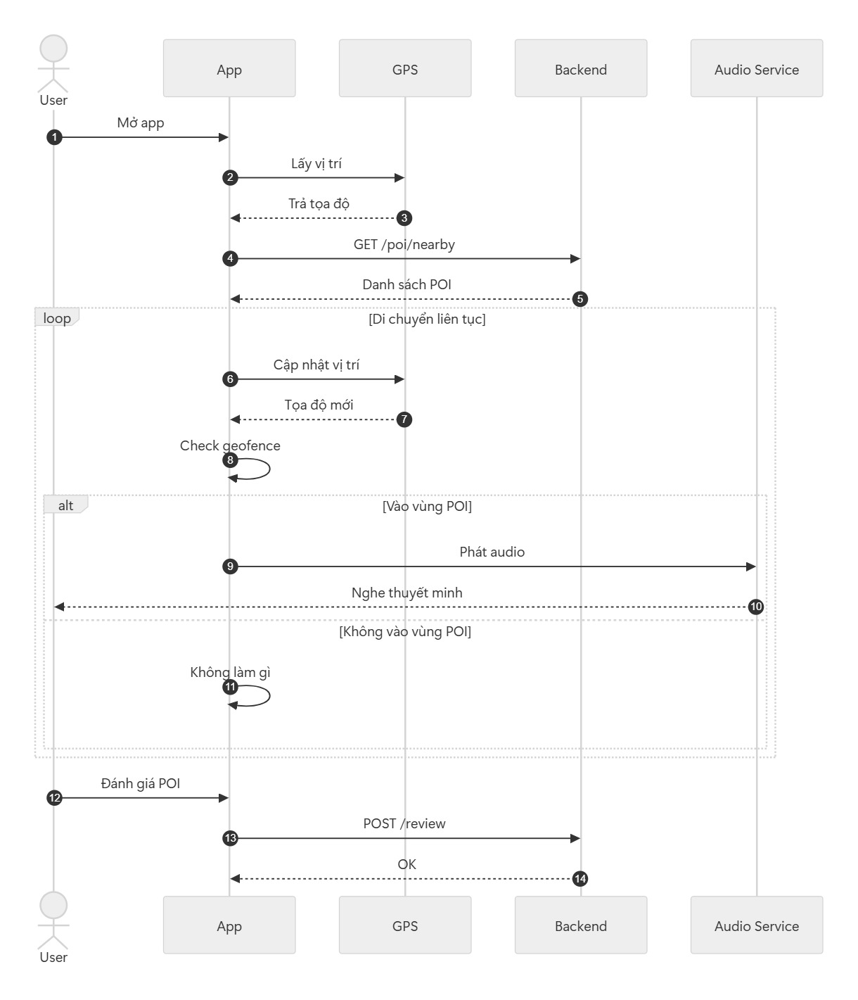
Quy trình cập nhật nội dung và SignalR đồng bộ
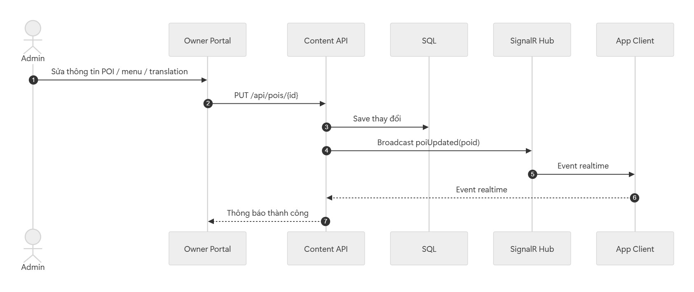
Quy trình khách hàng tra cứu thực đơn từ SQLite offline, chọn món và khởi tạo đơn hàng thông qua API.
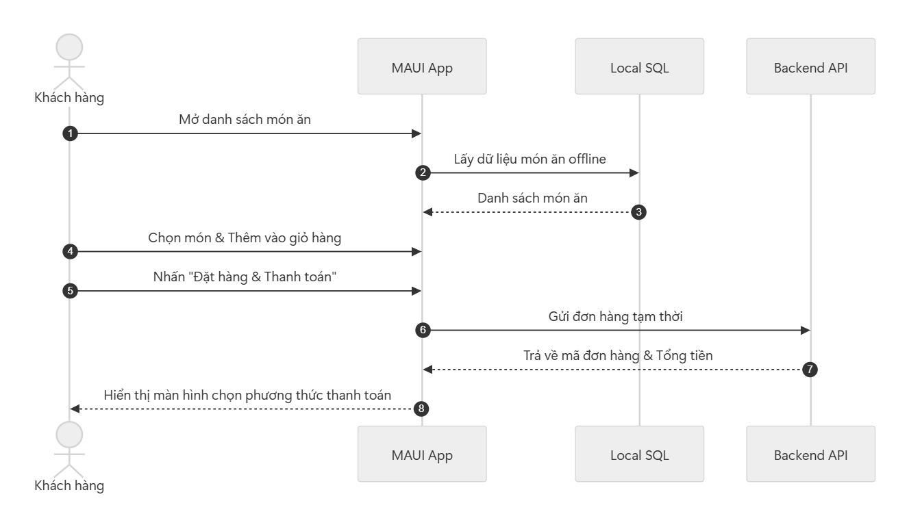
Quy trình hệ thống CMS nhận thông báo đơn hàng mới và cập nhật trạng thái chế biến thời gian thực.
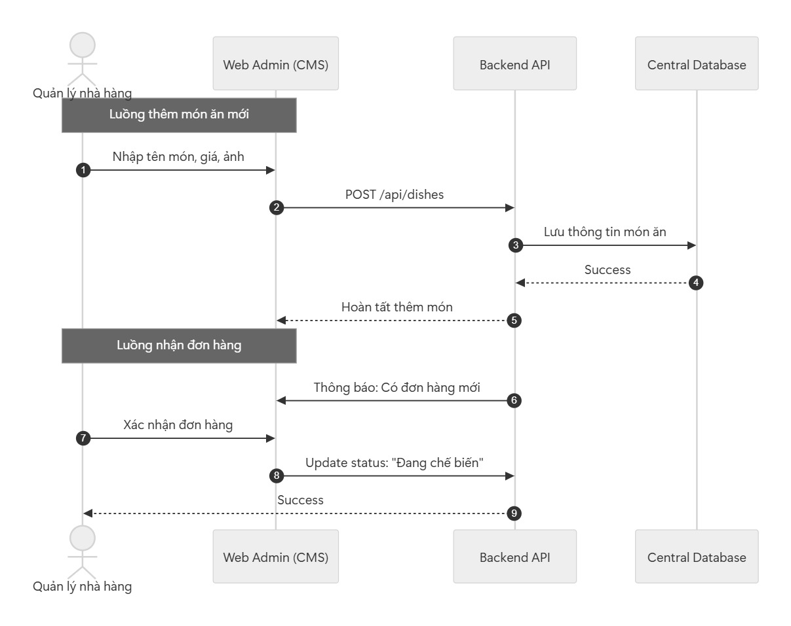
Tương tác giữa App, Cổng thanh toán (VNPAY/MoMo) và xác nhận trạng thái đơn hàng sau khi giao dịch thành công.
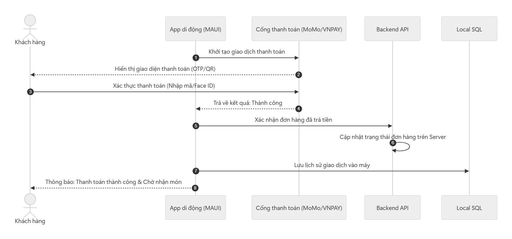
Quy trình kiểm tra dữ liệu đầu vào, khởi tạo tài khoản trên Central DB và thiết lập cấu hình mặc định.
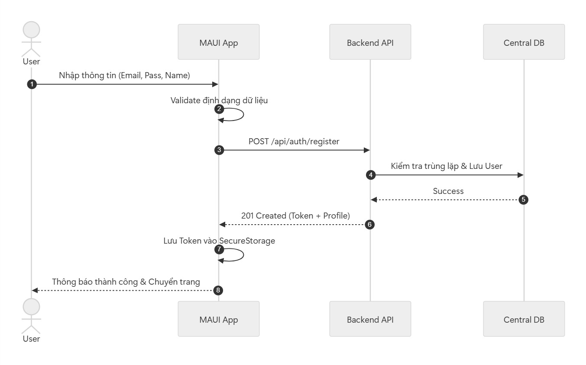
Quy trình gửi thông tin định danh, nhận JWT Token từ Server và đồng bộ thông tin người dùng cơ bản.
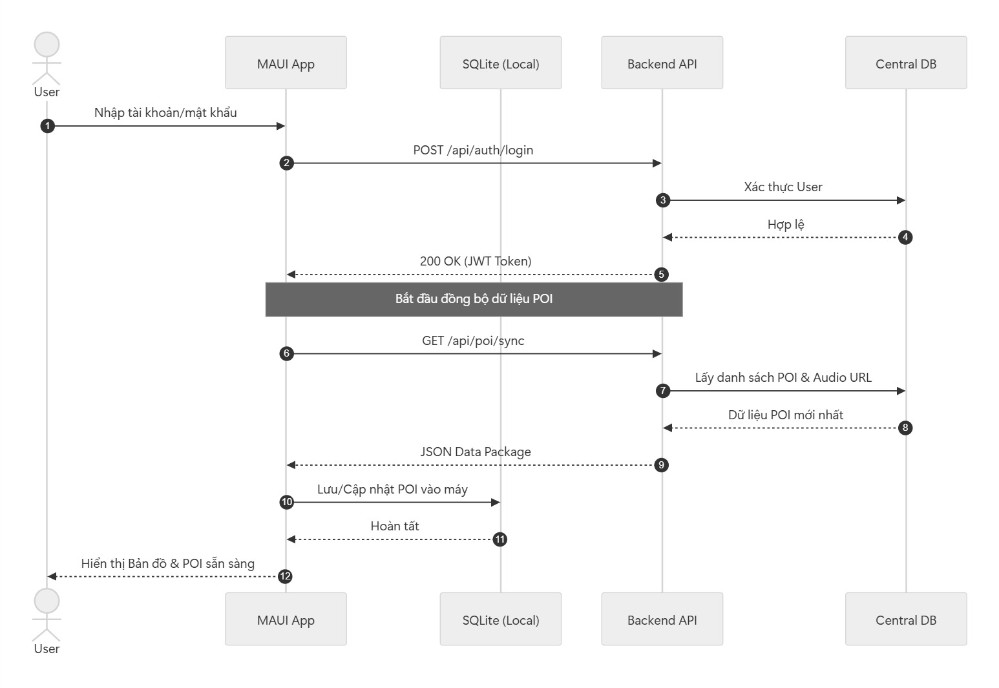
Luồng Admin thêm món mới, tải ảnh lên Storage và lưu thông tin vào cơ sở dữ liệu trung tâm.
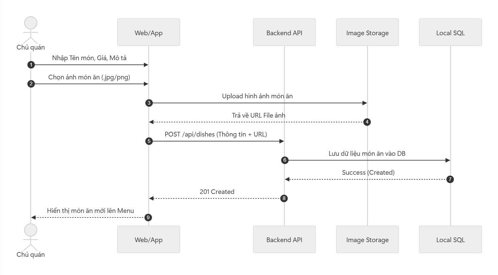
Quy trình quét mã tại điểm dừng để truy vấn nhanh dữ liệu POI/Món ăn mà không cần đợi tín hiệu GPS.
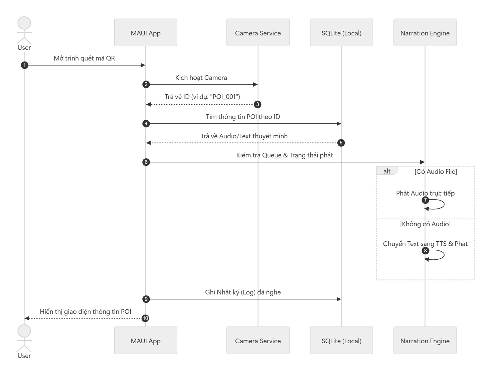
Mô tả quy trình kiểm tra tọa độ liên tục (Background Service) và kích hoạt thuyết minh dựa trên khoảng cách (Geofencing).
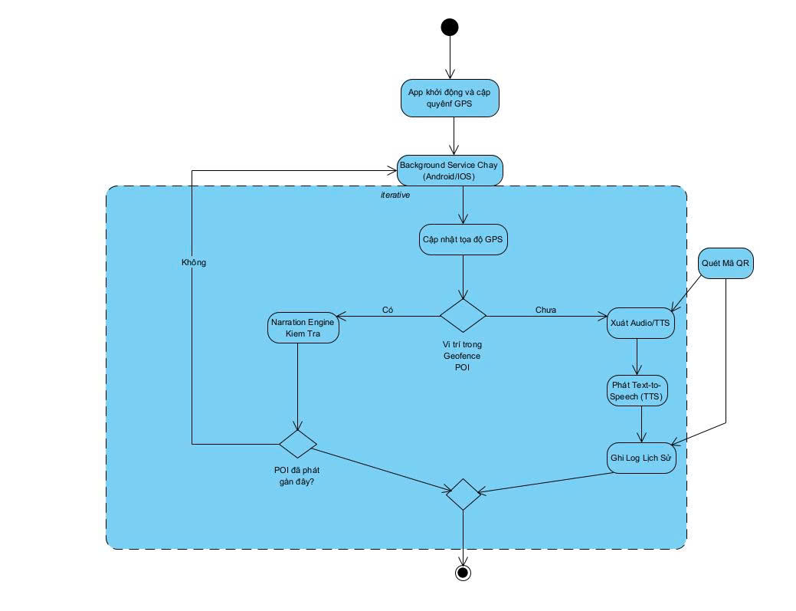
Sơ đồ lớp thể hiện mối quan hệ giữa các thành phần Core Engine, Service định vị và các đối tượng quản lý dữ liệu (POI, Dishes, User).
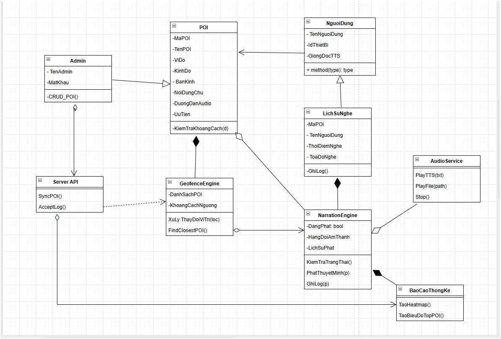
Mô tả các trạng thái chuyển đổi của dữ liệu từ khi Admin cập nhật trên CMS đến khi được SignalR đẩy xuống thiết bị di động (Real-time Sync).
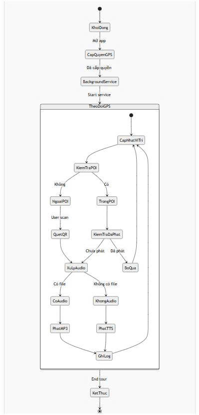
Phân tích các trạng thái vận hành của bộ phát âm thanh: Từ chờ lệnh (Idle), đang tải (Loading) đến đang phát (Playing) và xử lý ngắt quãng.
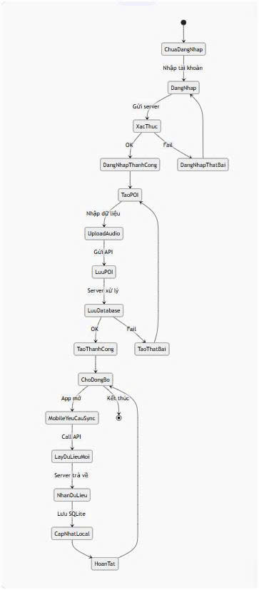
Trong các giai đoạn tiếp theo, hệ thống sẽ được mở rộng với các tính năng tương tác và thương mại điện tử nhằm nâng cao trải nghiệm người dùng và khả năng khai thác dữ liệu.
Các chức năng như đánh giá nhà hàng, thông báo đẩy và thanh toán trực tuyến sẽ giúp hệ sinh thái trở nên hoàn chỉnh và phù hợp với mô hình dịch vụ du lịch thông minh.
Xây dựng RESTful API và xử lý nghiệp vụ trung tâm hệ thống.
Phát triển ứng dụng di động đa nền tảng Android và iOS đồng bộ.
Hệ thống được thiết kế nhằm số hóa hoạt động quảng bá và trải nghiệm ẩm thực tại khu phố Vĩnh Khánh, cung cấp nền tảng tìm kiếm, định vị và thuyết minh tự động cho khách du lịch, đồng thời hỗ trợ các nhà hàng quản lý thông tin và tiếp cận khách hàng thông qua môi trường trực tuyến.
Xây dựng cộng đồng đánh giá, bình luận và xếp hạng nhà hàng thực tế.
Gửi thông báo đẩy về các chương trình khuyến mãi theo vị trí địa lý.
Tích hợp cổng thanh toán MoMo/VNPAY để nâng cấp tài khoản trực tuyến.